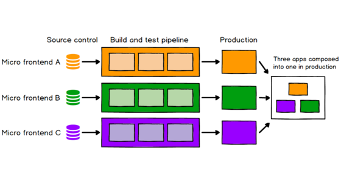
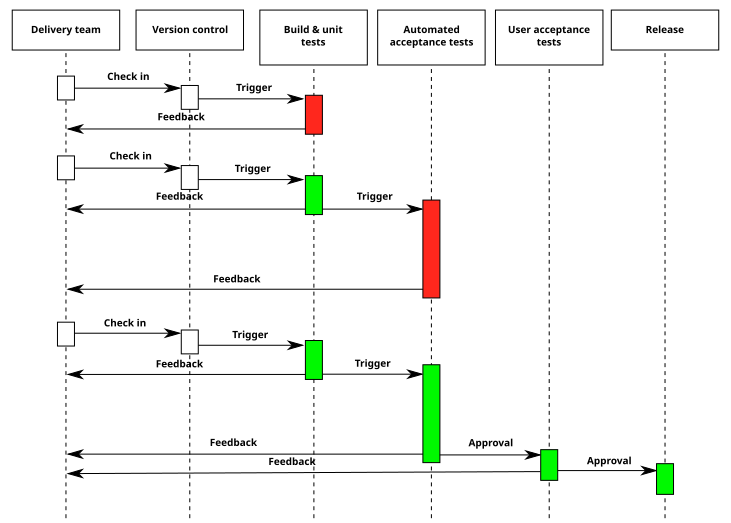

Engineering · Platform engineering · React, Rails, CI
Migrating a Rails-backed admin UI to React, one boundary at a time
Most platform work is invisible when it goes well. A product team adds a settings page, a navigation entry, or a table, and it looks and behaves like everything around it. They did not copy markup from a neighboring product. They did not ask the platform team for a private favor. They called a contract that was stable enough to build on. This article is about how to build and protect that contract while the technology underneath it changes, using a common and difficult example: moving the admin surface of a large Ruby on Rails application to React.
The same ideas apply to any shared UI layer that several teams extend: an internal admin console, a design-system-backed settings area, a navigation shell shared by several products. The stack names change. The failure modes do not.
1. What platform engineering actually is
A product engineer is measured by what a feature does for a customer. A platform engineer is measured by how much faster other engineers ship features without lowering quality. That sounds like a slogan until you try to measure it, and then it turns into three concrete questions:
First, can a team extend the system without talking to the platform team? If every extension needs a meeting, the platform is a bottleneck with documentation. Second, when the platform changes, do consumers break silently or loudly? Silent breakage is the expensive kind, because it shows up in production, in a team that did not change anything. Third, can the platform be operated? A shared framework has incidents, and someone has to be on call for them with enough instrumentation to find the cause quickly.
Everything below follows from taking those three questions seriously: extensibility, safe change, and operability.

2. Why “rewrite it in React” fails as a plan
A migration described as a file-by-file rewrite has no natural end. Pages move, their bugs move with them, and new features keep landing on the old stack because it is the one the team knows. Six months in, two stacks are alive and nobody can say what “done” means. The migration has become a permanent state.
The alternative is to treat the migration as a boundary-drawing exercise. Before moving any screen, answer one question: which decisions belong to the framework, and which belong to a product team?
- Framework decisions are the ones every screen shares: the navigation shell, page layout, authentication context, error boundaries, theming, analytics hooks, and the extension points other teams call.
- Product decisions are the ones only one product understands: the fields on a particular settings form, the validation of a domain rule, the copy.
Once that line is written down, the migration has an order. Move the shell and shared primitives first, because they are the dependency of everything else. Move leaf screens afterward, in whatever order product teams can absorb. A screen on the old stack keeps working inside the new shell, and a screen on the new stack can be rendered by the old server. Neither side has to wait for the other.
3. Running two stacks without a mess
During the migration, Rails and React render in the same product. The practical questions are small and unglamorous, and they decide whether the transition is pleasant.
Who owns the page frame? Pick one. The simplest arrangement is a React shell that owns navigation and layout, with legacy pages rendered inside it. Rails serves a bootstrap payload (current user, account, feature flags, locale) as JSON in the initial response, so the shell does not need a round trip to know who it is rendering for.
How does a route choose a renderer? A route table in the shell maps a path to either a React component or a legacy view, and a flag decides the winner per account or percentage. The flag is also the rollback. If a migrated screen misbehaves for some accounts, turning the flag off is a configuration change, not a revert and redeploy.
How do the stacks share state? As little as possible. The legitimate shared state is identity, permissions, and locale, all of which can be passed down at mount time. Anything richer, such as a shared mutable store between React and legacy JavaScript, creates the coupling the migration is trying to remove.
How is data fetched? If the backend exposes GraphQL, the React side can use a typed client with generated hooks, and the schema becomes the contract between front and back end. If it is REST, a thin typed API layer plays the same role. In both cases, keep fetching in one place so that caching, retries, and error normalization are not reimplemented per screen.
// A route registry entry: one place decides which renderer wins.
type RouteEntry = {
path: string;
react?: () => Promise<{ default: React.ComponentType }>;
legacy?: { viewId: string };
flag?: string; // when on, prefer the React renderer
};
export function resolveRenderer(entry: RouteEntry, flags: Set<string>) {
const preferReact = entry.react && (!entry.flag || flags.has(entry.flag));
return preferReact ? { kind: "react" as const } : { kind: "legacy" as const };
}4. Designing the extension points
An extension point is a promise. Once another team calls it, every change you make to it is a change to their product. That asks for more discipline than internal code does.
- Make the surface small. Every option is a future support request. Start with the two or three things teams demonstrably need, such as registering a route, adding a navigation item, and contributing a settings panel.
- Type it. TypeScript types are documentation that fails the build when it is wrong. A consumer who passes the wrong shape should find out in their editor.
- Version it. Follow semantic versioning for the package other teams install, and publish a deprecation policy: how long an old API survives, and how consumers will be told.
- Ship codemods. When a breaking change is unavoidable, a script that rewrites call sites turns a week of coordination into a pull request each team reviews.
- Test the contract, not just the component. A test that registers a panel the way a real consumer does, mounts the shell, and asserts that the panel appears in the right place is worth more than ten snapshot tests of internal components.
It also helps to adopt one rule early: no consumer reaches into internal modules. If something is not exported from the package entry point, it is private, and the build enforces it with an exports map or a lint rule.
5. CI as a platform feature
For a shared framework, CI is not an afterthought; it is the enforcement mechanism for the contract. A UI change should fail in the platform’s pipeline before it fails for a team that only consumes the package.
A pragmatic GitHub Actions setup for this kind of repository has a few layers:
- Fast checks first: type-check, lint, and unit tests, run on every push and cached aggressively (dependency cache keyed on the lockfile).
- Component and integration tests: React Testing Library, querying by role and accessible name instead of class names, so the tests describe behavior a user or assistive technology would notice.
- End-to-end tests: Cypress for the handful of flows that cross the Rails/React boundary, such as loading the shell, navigating between a legacy page and a migrated one, and saving a setting. Keep this set small and deterministic. A large flaky end-to-end suite teaches everyone to ignore red builds.
- Consumer smoke tests: build a minimal example consumer against the candidate version of the package. If the example cannot compile, the release does not go out.
name: platform-ci
on:
pull_request:
push:
branches: [main]
jobs:
verify:
runs-on: ubuntu-latest
steps:
- uses: actions/checkout@v4
- uses: actions/setup-node@v4
with:
node-version: 20
cache: npm
- run: npm ci
- run: npm run typecheck
- run: npm run lint
- run: npm test -- --ci
e2e:
needs: verify
runs-on: ubuntu-latest
steps:
- uses: actions/checkout@v4
- uses: actions/setup-node@v4
with: { node-version: 20, cache: npm }
- run: npm ci
- run: npm run build
- run: npx cypress run --browser chrome
Automation that assists review without replacing it
Two pieces of automation are worth adding next to the ordinary checks: a bot that drafts pull-request descriptions from the diff, and an AI-assisted code reviewer. Both are useful if their role is understood. A generated description helps the next reader when it explains why the change exists and what to look at, and hurts when it restates the diff in full sentences. A model reviewer is good at pointing at risky patterns (a missing dependency in a hook, an unhandled promise, an accessibility regression) and is not a reviewer in the accountable sense. A person still decides. Treat these as aids inside the existing review, and measure them by whether reviewers keep the suggestions they accept.
6. Operating what you ship
A framework that cannot be operated is a library with a marketing name. Platform teams carry pager duty because the failures that matter (storage limits, API usage spikes, authentication edge cases) are exactly the ones product teams cannot diagnose from inside their own feature.
Three habits make on-call survivable:
- Structured, searchable errors. A boundary around each mounted screen reports the screen name, framework version, and account identifier. “Something went wrong” with no context is how an hour disappears.
- Runbooks written after each incident. The fix is a few lines; the diagnosis is what you want to preserve: which dashboard to open, which flag to flip, who owns the downstream service.
- Post-incident reading of your own API. The incident is where you learn whether the API you published matches the failure the caller actually hits. If every caller wraps your function in the same retry code, the retry belongs in your function.
7. Rolling out to everyone
A rollout is a sequence of controlled exposures, and each stage needs a defined way to stop. A reasonable pattern is internal accounts first, then a small percentage of real accounts, then wider cohorts, with a kill switch at every step and a metric that tells you whether the new path is at least as healthy as the old one: error rate, time to interactive, and task completion for the flows that matter.
When the last cohort turns over, “100% of accounts” is the visible result. It is also the least interesting number. The engineering is the boundary, the flag, the contract tests, and the runbook that made the percentage safe to raise.
8. One BI view for several audiences
Platform thinking extends past code. In many companies, Sales, Legal, Support, and Engineering each pull the same customer data into a different spreadsheet and then disagree about the numbers. A shared dashboard in a BI tool such as Looker solves this only if it is built like an interface.
That means a single definition of each metric in the semantic layer (for example, one definition of “active API usage” written once as a measure), explicit grain and filters, and permissions that expose what each audience should see and nothing else. Sales uses the view in a customer conversation; Legal uses the same view for the same account when a contract question comes up; neither files a ticket with engineering for a one-off export. When two teams cannot trust the same numbers, the dashboard has failed the same way a broken API fails, and it should be debugged the same way: find the divergent definition, fix it at the source, and add a test or a data check so it cannot drift silently.
9. A checklist for the next migration
- Write down the framework/product boundary before moving a screen.
- Migrate the shell and shared primitives first; migrate leaf screens behind per-route flags.
- Keep the extension API small, typed, versioned, and covered by contract tests.
- Put a consumer smoke test in CI so breakage appears in the platform repository first.
- Keep the end-to-end suite small enough to trust.
- Instrument every mounted screen; write runbooks after incidents.
- Roll out in cohorts with a kill switch and a health metric at each stage.
- Define shared metrics once, and expose them through one dashboard.
The common thread is a preference for a small contract another team can call on a Tuesday over a large rewrite that only its author can explain. Platform engineering is ownership of a slice end to end, plus the discipline to leave the rest of the system alone.